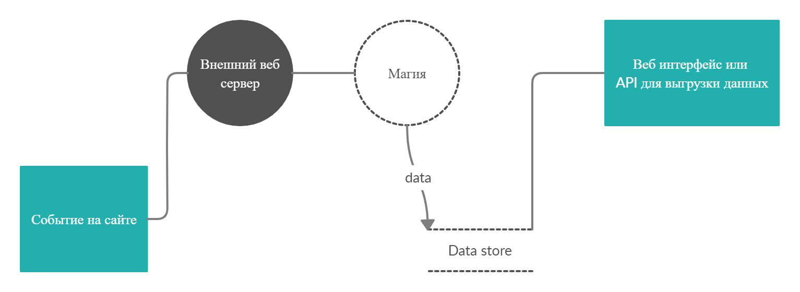
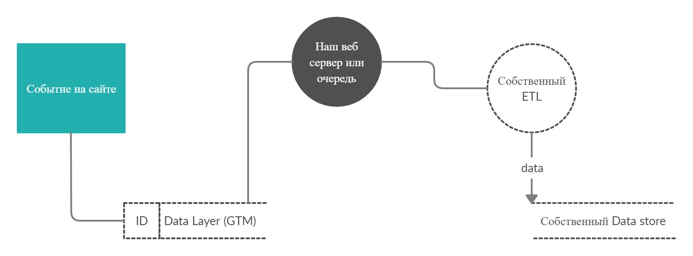
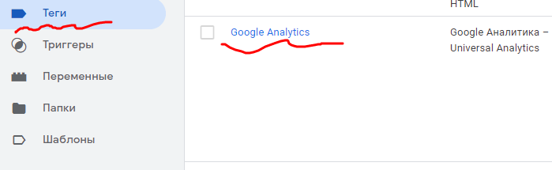
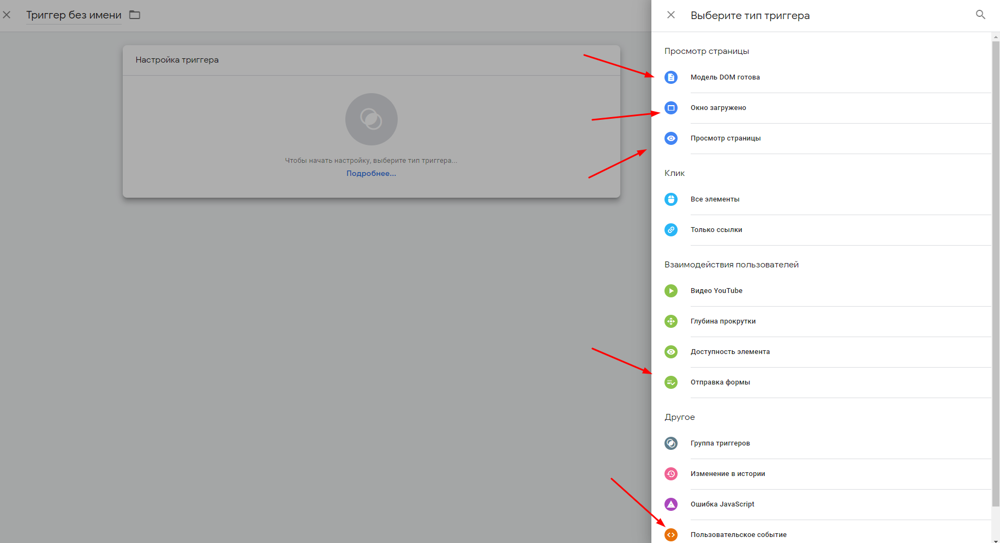
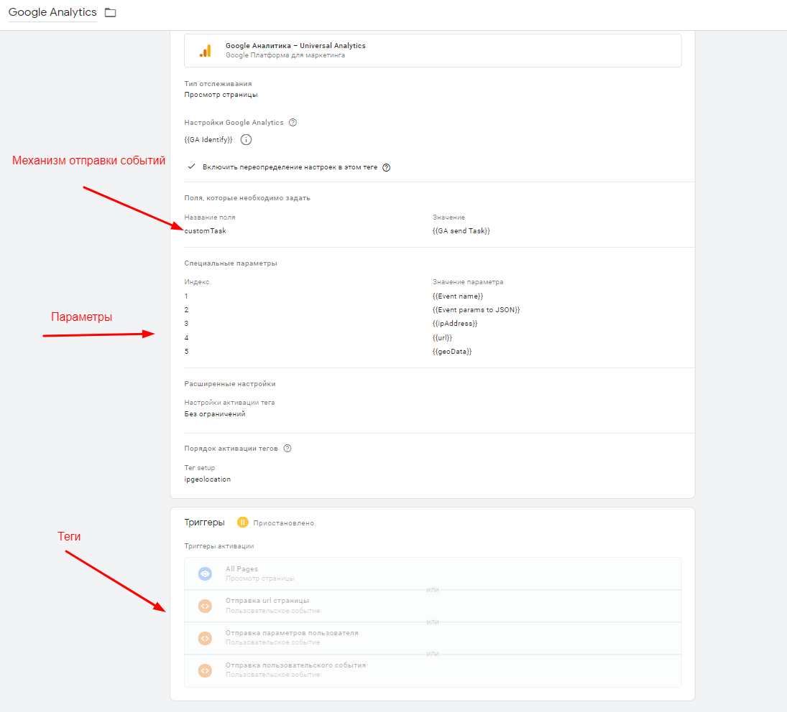
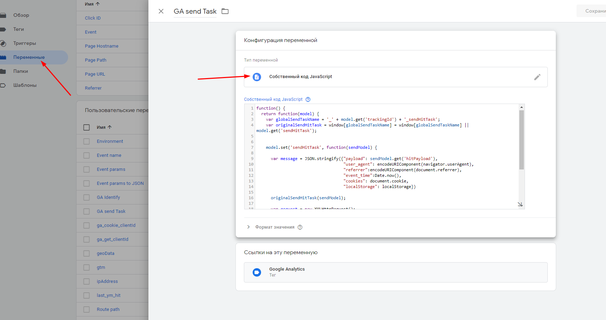
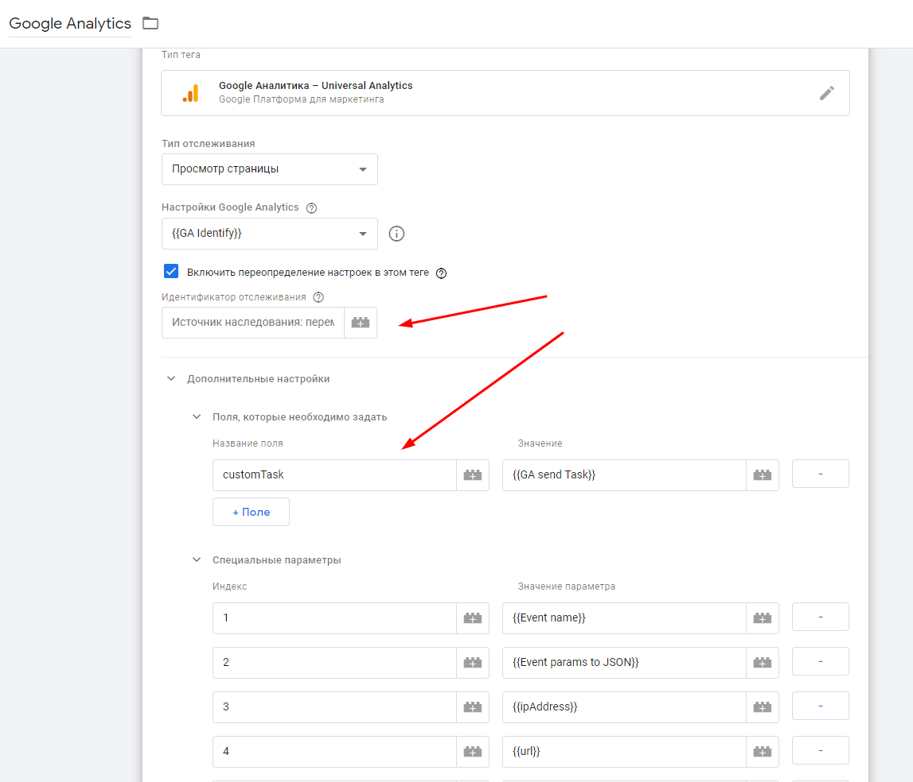
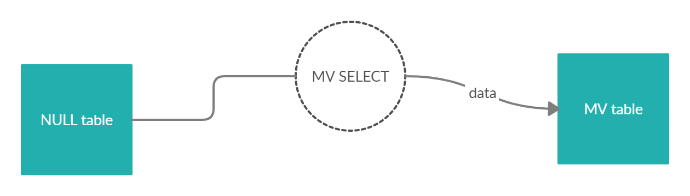

Что такое и зачем нужно?
Итак, если у вас есть веб сайт скорее всего там стоит какой то готовый инструмент веб аналитики, например GA/YM, или что то более экзотическое, например Matomo(кстати прежде чем рассматривать вариант со своим стримом посмотрите в эту сторону, для мелких сайтов это решение выглядит весьма рабочим). Все отправляемые вами события проходят независимо от счетчика проходят плюс минус один и тот же путь до конечного пользователя.

В статье я покажу как изменить часть про внешний веб сервис и магию, и направить данные напрямую в ваш датастор. Несколько слов зачем это нужно:
- Это круто! Серьезно это очень круто и такой опыт отлично себя продает
- Можно избавиться от семплирования в GA
- Можно использовать для моделей машинного обучения в реал тайме (например рекомендательные системы)
Что нам нужно и как мы это будем строить

Вот краткая схема, в моей реализации - мы будем писать напрямую в очередь (RabbitMQ) через HTTP протокол, обрабатыать события простым скриптом (консьюмером/ETL) и писать все это в data store(ClickHouse). Конечно это не самая отказоустойчивая система, тем не менее она может выдерживать небольшие нагрузки и в целом неплохой baseline для расширения вашего кликстрима.
А теперь по порядку
События на сайте и GTM
По факту во время посещения сайта пользователь что то отправляет и что то плучает, например с помощью простого JS кода мы можем среагировать на нажатие кнопки, или отправки формы на сервер, или перезагрузки страницы, мы можем также записать в куку пользователя его какой-то сгенерирвоанный идентифкатор и например идентифкатор сессии. Примерно этим занимаются веб счетчики, они из коробки умеют размечать сесии и пользователей, а также реагировать на перезагрузку страницы и некоторые другие действия, например прокрутку страницы или клики на некоторую область экрана (отсюда кстати и появляется информация в веб визоре яндекса). GTM предоставляет очень удобный UI для описания того на что и как должен реагировать веб счетчик, например внутри GTM можно настроить отправку события в веб метрику при нажатии на кнопку отправки почты. Вообще про GTM можно говорить очень много, я оставлю пару ссылок на того кто знает про него гораздо больше раз и два.
Итак я надеюсь вы сами справитесь с тем чтобы его установить и настроить, я начну сразу с того момента как мы настраивем клиентский скрипт для отправки данных куда то…
Создадим тег GA, в тег нужно передать идентифкатор вашего счетчика GA

Для активации тега нужны тригеры, их создаем отдельно, можно сразу несколько, реагировать мы будем на любое из них

После нескольких итераций вы получите что то в таком духе (я не сильно подробно останавливаюсь на этом вопросе, я уверен что с этим вы можете разобраться без меня, главное что вы должны получить это поток событий в GA, а скоро мы попросим их отправлять на наш сервер)

Custom task и свой код
Механизм Custom task это не какой то хак или баг, информация про это есть на самом сайте гугла, так что использовать его не восбраняется. Вот ссылочка где вы можете с этим ознакомиться.
Итак нам нужно создать переменную “Собственный JS код” который будет перехватывать данные и отправлять куда нужно.

Вот пример кода который перехватывает события GA, обогащает их и отправляет дальше.
function() {
return function(model) {
var globalSendTaskName = '_' + model.get('trackingId') + '_sendHitTask';
var originalSendHitTask = window[globalSendTaskName] = window[globalSendTaskName] || model.get('sendHitTask');
model.set('sendHitTask', function(sendModel) {
// Собираем кучу всего ненужного
var message = JSON.stringify({"payload": sendModel.get('hitPayload'),
"user_agent": encodeURIComponent(navigator.userAgent),
"referrer":encodeURIComponent(document.referrer),
"event_time":Date.now(),
"cookies": document.cookie,
"localStorage": localStorage})
originalSendHitTask(sendModel);
// Отправка данных
var request = new XMLHttpRequest();
request.open("POST", <YOUR HOST>, true);
request.setRequestHeader('Content-Type', 'application/json');
// Креды только в таком виде base64(login:pass)
request.setRequestHeader("Authorization", <YOUR AUTH>);
// Настройки для RabbitMQ
var params = JSON.stringify({"properties":{"delivery_mode":2},"routing_key":<YOUR KEY>,"payload": message,"payload_encoding":"string"});
request.send(params);
});
};
}
Последний пункт нашего клиента это добавить поле в список задач для исполнения, изменяем тег GA и добавляем нашу переменную как на картинке.

Немного по пропускам в коде, я подозреваю что у вас есть RabbitMQ или же если нет мы его скоро настроим, но “YOUR HOST” это всего лишь хост вашего обменника (exchange), “YOUR AUTH” это логин пароль в формате base64(login:pass) можно получить это значнеие вот тут.
Веб сервер, что выбрать?
На самом деле выбор тут реально большой, от простейшего Flask(не стоит) до Fast API(асинхронность из коробки), и очередей таких как Kafka и RabbitMQ. Мы как вы уже поняли поставим кролика. Первое что нам нужно, это железо, я надеюсь оно у вас есть, причем не просто машина которая доступна из сети, было бы неплохо повесить на него домен и прописать SSL сертификат, иначе вы стокнетесь с проблемой передачи данных с HTTP -> HTTPS (поверьте, это больно). Также чтобы поставить кролика нам нужен docker, да мы не крутые админы, и контейниризация избавит нас от проблем эксплуатации и особенностей ОС. Допустим вы поставили Docker и docker-compose, вот docker, compose настройки этих сервисов под убунту.
Хорошо, настраиваем инфроструктуру под все это дело.
Создаем Dockerfile и пишем следующее, это будет наш еще не готовый консьюмер, его мы напишем чуть позже.
FROM python:3.6.2
RUN mkdir -p /usr/src
WORKDIR /usr/src
COPY requirements.txt /usr/src/
RUN pip install --no-cache-dir -r requirements.txt
COPY . /usr/src
VOLUME /usr/src/data
CMD [ "python", "./consumer.py" ]
Тепрь создадим requirements.txt
pika==1.1.0
clickhouse-driver==0.1.5
Теперь добавим сам скрипт консьюмера consumer.py
import pika, sys, os
import traceback
import json
from datetime import datetime
from clickhouse_driver import Client
import time
client = Client(<YOUR PARAMS>)
class Consumer:
_GLOBAL_LIST = list()
def __init__(self,
host, port,
virtual_host,
user, password):
self.host = host
self.port = port
self.virtual_host = virtual_host
self.user = user
self.password = password
self.credentials = pika.PlainCredentials(self.user,
self.password)
def callback(self, ch, method,
properties, body,
length_queue=5000):
# Append new message to global list
self._GLOBAL_LIST.append({'insert_time': datetime.now(),\
'headers': json.dumps(properties.headers),\
'queue': 'production',\
'params_json': json.dumps(json.loads(body), ensure_ascii=False)})
if (len(self._GLOBAL_LIST) == length_queue or
(datetime.now().minute % 10 == 0) and len(self._GLOBAL_LIST) >= 500):
try:
client.execute('INSERT INTO <TABLE> (insert_time, headers, queue, params_json) VALUES',
self._GLOBAL_LIST)
self._GLOBAL_LIST.clear()
time.sleep(1)
except:
try:
with open('data/file_' + \
str(hash(datetime.now())) + \
'.txt', 'a', encoding='utf8') as file:
file.write(str(self._GLOBAL_LIST))
self._GLOBAL_LIST.clear()
except:
print('Ошибка:\n', traceback.format_exc())
print('Ошибка:\n', traceback.format_exc())
def listen(self, queue):
connection = pika.BlockingConnection(
pika.ConnectionParameters(host=self.host,
port=self.port,
virtual_host=self.virtual_host,
credentials=self.credentials))
channel = connection.channel()
channel.basic_consume(queue=queue,
on_message_callback=self.callback,
auto_ack=True)
channel.start_consuming()
if __name__ == '__main__':
consumer_rk = ConsumerRkeeperLite(host='rabbitmq',
port=5672,
virtual_host='/',
user=<YOUR PARAMS>,
password=<YOUR PARAMS>)
consumer_rk.listen(<YOUR QUEUE>)
Скрипт простой до ужаса, не самый надежный чесн говоря, но для старта подойдет, мы просто читаем в потоке сообщения и достигая неких лимитов пишем их в Кликхаус, который стоит на удаленном сервере(вообще конечно размещать клик и кролика на одной машине плохая мысль, поэтому сразу разделяйте их, иначе будет больно), но если не смогли записать то пишем данные в файл на диске.
Чуть не забыли добавить конфиг кролика, это один из самых важных файлов, если не создать этот файл и не указать что можно обращаться со всех сайтов то у вас ничего не получится, это проблемы CORS, данная настройка разрешает всем сайтам обращаться в кролика, то что нам и нужно.
management.cors.allow_origins.1 = *
Теперь сделаем сборку всех наших сервисов.
version: '2'
services:
rabbitmq:
image: 'bitnami/rabbitmq:latest'
volumes:
- /home/storage:/bitnami
- /home/etc:/bitnami/rabbitmq/conf/
ports:
- '15672:15672'
- '5672:5672'
environment:
- RABBITMQ_USERNAME=name
- RABBITMQ_PASSWORD=pass
restart: always
consumer:
image: 'consumer'
build: './'
depends_on:
- rabbitmq
restart: always
volumes:
- /home/volumes:/usr/src/data
ports:
- '8000:8000'
По идеи в этот момент события с клиента начнут поступать в кролика, а из кролика читаться в кликхаус, но мы кое что забыли, а именно кликхаус…
Кликхаус и ETL в одном лице
Я не буду вас учить раскатывать кликхаус, инфы про это, ну очень много, будем считать что он есть. я покажу лишь механизм который использую сам для настройки “бесшовного” ETL.

У кликхауса есть инструмент, который тригерится на вставку данных и позволяет обработать небольшой кусок, это очень полезно и удобно. Сделаем Null таблицу, такая таблица позволяет только реагировать на вставку данных и не хранит их у себя, это удобно, хотя и нужно быть остороным!
create table table1
(
insert_time DateTime,
headers String,
queue String,
params_json String
) engine = Null;
Теперь на такую таблицу можно навесть MV
CREATE MATERIALIZED VIEW <TABLE>
ENGINE = MergeTree() PARTITION BY toYYYYMM(insert_time)
ORDER BY insert_time SETTINGS index_granularity = 8192 AS
SELECT visitParamsString(param, key) ... и тд
FROM table1 # Это Null таблица
Запрос пишется в соответствии с теми данными которые вы отправляете, но предназначин для разбора большого JSON на одинарные колонки, старайтесь разбирать ваши данные именно так.
В целом это все, но есть небольшое послесловие.
Проблемы и минусы подхода
- GTM плохо работает с мозилой, есть шанс упустить много данных
- Будьте осторожны! GTM == ПРОД, не заставляйте ваших админом и разрабов вас ругать
- HTTP медленней чем нативный протокол AMQP
- Можно накосячить и заставить пользователей страдать
Плюсы подхода
- Простая и быстрая настройка событий, есть куча сайтов где рассказыают как передать в GTM что угодно
- Не нужны разработчики
Что не освещалось
Я совсем не осветил проблему создания очередей, это можно почерпнуть из ссылок ниже, и безопасности всей затеи, вам нужно понимать что как только вы начинаете отправлять данные с клиента вы по сути даете возможность люому челвоеку отправить что угодно в ваш кролик, тем самым можно столкнуться например с DDos атакой, или же человек нарошно начнет отправлять неверные данные. Будьте осторожны! Пишите фильтры и проверяйте кажлое событие перед вставкой, следите за состоянием вашего кролика и железки на котором он стоит.